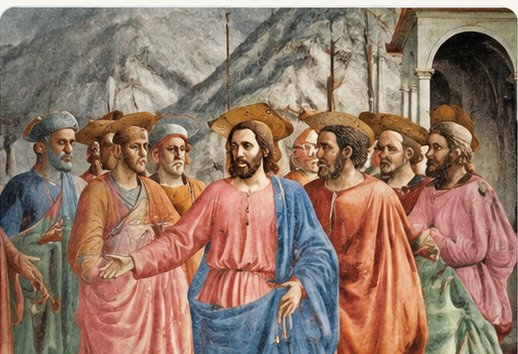
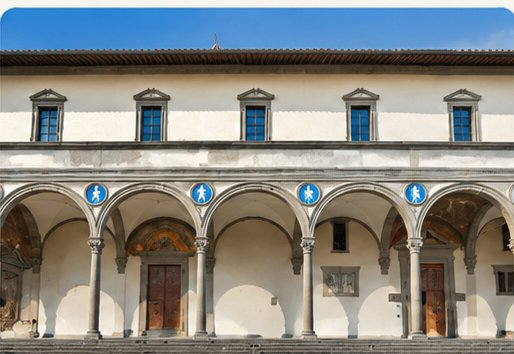

Parcours Renaissance
De l’art médiéval à la Renaissance : comment les artistes ont-ils appris à représenter des corps, des émotions et des espaces plus vrais ?
Du Moyen Âge à la Renaissance
Une chronologie évolutive pour suivre les artistes, les œuvres et les transformations de l’art au fil des siècles.
Des gestes, des émotions et un espace plus convaincants.
À venirProportions, architecture antique et recherches sur la perspective.
Voir la fiche →Peinture, sculpture, architecture
La Renaissance ne concerne pas seulement la peinture. Chaque discipline redécouvre à sa façon le corps, l’espace et l’Antiquité.

Représenter le réel
Volume, perspective, lumière et émotions.
Découvrir le parcours →
Redécouvrir le corps
Relief, attitudes et mouvement.
Découvrir le parcours →
Construire l’harmonie
Proportions, modules et Antiquité.
Découvrir le parcours →Illustrations d’ambiance générées par IA : elles ne sont pas des photographies documentaires des œuvres. Les fiches artistes présentent les œuvres réelles.
Les grandes innovations
Explorer les artistes
Les fiches détaillées expliquent les œuvres avec des détails à observer et des photographies originales.